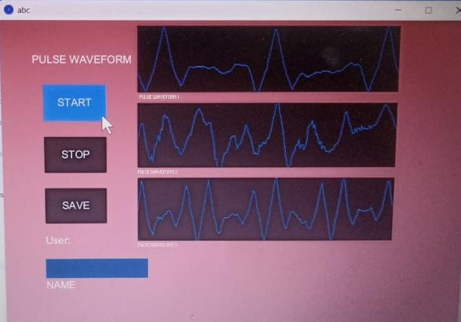
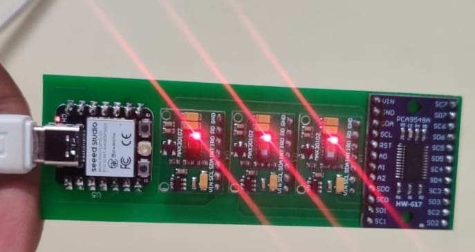

Pulse Sensor
October 2023


Overview
- This is wrist pulse sensing and recording
platform using MAX30100 pulse oximeter sensors, Multiplexer and an ESP 32 Microcontroller. Software used is Arduino. This is a project based on the design and fabrication of a PCB thus making it a full product with three sensors to measure vatta, pitta and kapha from the wrist, and an ESP 32 Microcontroller which is the brain of the project. It provides various functionalities including wifi etc. Further scope for this project is to make it fully wireless by sending data to the User Interface through wifi..